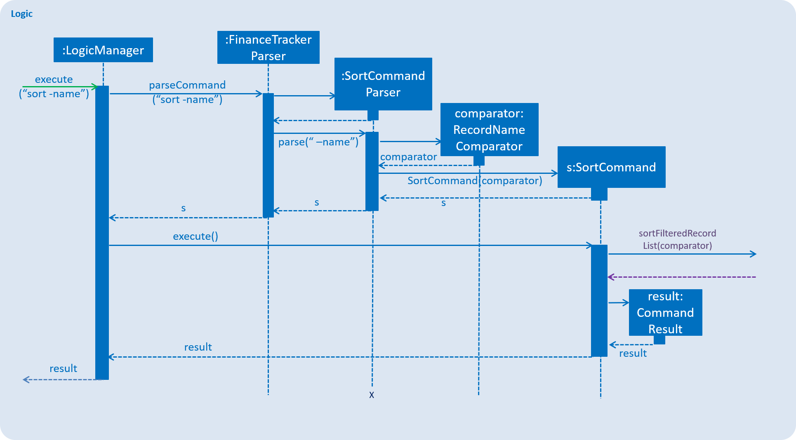

Overview
This portfolio describes my contributions to a software engineering project called In-Credit-Ble.
In-Credit-Ble is a finance tracker application, morphed from an address book application, and created by 4 other friends and me. With In-Credit-Ble, you can set budgets, allocate budgets to categories, record your expenses etc.
Abiding by the project constraints, In-Credit-Ble is designed for users who prefer typing over mouse/voice commands. All of In-Credit-Ble’s functions can be accomplished using the keyboard.
In this project, I mainly worked on implementing In-Credit-Ble’s sort and reverse features.
The following sections explain these enhancements in more detail, and also show the relevant sections I have added to In-Credit-Ble’s user and developer guide on these features.
The figure below explains the symbols and formatting used in this document
|
Words in |
|
Words in square brackets are optional |
`SortCommandParser#parse() |
|
Summary of contributions
This section contains a description of some enhancements I made, and a summary of my contributions.
Enhancement added
I added a sort command and a reverse command in In-Credit-Ble.
-
What they do:
Thereversecommand allows users to reverse the list of entries displayed on the graphic user interface. Thesortcommand allows users to sort the entries by name, amount, date and category, in both ascending order and descending order. -
Justification:
Without thesortcommand, entries will be displayed in an order where the most recently entered entry is at the bottom of the list. However, this may not be very helpful and user-friendly to the user. A user may want to sort the entries by amount, so that he/she can find out what he/she has been spending the most on. A user may also want to sort entries by name, date and category to make the list more organised.
Thereversecommand will allow the user to reverse the list as a user may want to view the entries in the opposite order. For example, after sorting the entries by amount in descending order, a user may want the entries to be sorted by amount in ascending order next, and this can be achieved conveniently using thereversecommand. -
Highlights:
These enhancements work with existing commands such aseditanddelete. When a list is sorted, it may be easier to find an entry (In-Credit-Ble has asearchfunction too!). These enhancements are also compatible with In-Credit-Ble’sundoandredofunctions.
Code contributed
Click here to see the code I contributed to the In-Credit-Ble project!
Other contributions
-
Enhancements:
-
Added aliases for the earlier commands and allowed commands entered to be case-insensitive so that the software becomes more user-friendly and convenient to use.
(Pull Requests: #15, #22, #71) -
Imported DateTimeFormatter and LocalDate into the project to make management of dates easier.
(Pull Requests: #90) -
Worked on debugging the system tests and increased code coverage.
(Pull Requests: #177)
-
-
Documentation:
-
Community:
Contributions to the User Guide
These are additions I made to In-Credit-Ble's User Guide for the reverse and sort features.
Sorting the entries according to name/amount/date/category: sort
You can choose to sort the list of entries by name, amount, date or category.
Format: sort -FLAG [ORDER]
|
To sort any list conveniently in the reverse order, use the reverse command!sort -namereverseList will be sorted by name in reverse lexicographical order. |
Reversing the entries: reverse
You can also reverse the order of the list of entries in the records.
Alias: rev
Format: reverse
Contributions to the Developer Guide
These are additions I made to In-Credit-Ble's Developer Guide for the reverse and sort features.
Sort feature
By default, the list of entries is ordered according to the time the entry is entered into the application, where the entry entered first will be at the top of the list, and the entry entered last is at the bottom of the list. The sort mechanism allows users to view their expense records in a different way.
Current Implementation
The sort command uses comparators that implement java.util.Comparator interface to provide the comparison functions.
| Command | Comparator used | Effect |
|---|---|---|
|
|
Lexicographical order |
|
|
Descending order |
|
|
Reverse chronological order |
|
|
Lexicographical order |
| Command | Comparator used | Effect |
|---|---|---|
|
|
Reverse lexicographical order |
|
|
Ascending order |
|
|
Chronological order |
|
|
Reverse lexicographical order |
Here is the list of operations involved in the execution of command, sort -name.
-
LogicManager#execute("sort -name")callsFinanceTrackerParser#parseCommand("sort -name"). -
FinanceTracker#parseCommand("sort -name")creates a newSortCommandParserobject and callsSortCommandParser#parse(" -name"). -
SortCommandParser#parse()creates a newRecordNameComparator()object, comparator and passes it as a parameter into theSortCommandconstructor. -
The
SortCommandobject, s, is then passed back to theSortCommandParser,FinanceTrackerParser, and finally back to theLogicManager.Figure 4. Sequence Diagram of Sort Command I -
LogicManager#execute("sort -name")then continues to callSortCommand#execute(). -
SortCommand#execute()callsModel#SortFilteredRecordList(comparator). -
Model#SortFilteredRecordList(comparator)callsFinanceTracker#sortRecordList(comparator). -
FinanceTracker#sortRecordList(comparator)callsUniqueRecordList#sortList(comparator). -
UniqueRecordList#sortList(comparator)then usesFXCollection’s static methodsort()to sort the records. -
SortCommand#execute()then creates aCommandResultobject and returns it back to theLogicManager.
Design Considerations
Aspect: How sort is executed
-
Alternative 1 (current choice): Use the
Comparatorinterface.-
Pros 1: Sorting can be done based on different attributes of the records (name, amount, date, category).
-
Pros 2: Allows an alternative ordering to be applied, does not have to be the natural ordering. Therefore, dates can be sorted in reverse chronological order, and amount in descending order.
-
Cons: A new class that implements the interface
Comparatorneeds to be created.
-
-
Alternative 2: Use the
Comparableinterface.-
Pros: Type-safe with compiler as
Comparable#compareTo()only accepts object of typeT, instead ofjava.lang.Object. -
Cons 1: There can only be one form or way of sorting the records.
-
Cons 2: Uses the natural order for sorting. Therefore, dates will be sorted in chronological order, amount in ascending order, and names and categories in lexicographical order.
-
Aspect: How sort is executed when [ORDER] argument is supplied and specified order is opposite to that of default. (E.g. sort -name -desc)
-
Alternative 1 (current choice): A new comparator that imposes the reverse ordering of one of the four defined comparator classes is created.
(E.g. To sort the list by name in reverse lexicographical order, a new comparator,RecordNameComparator#reversed()is created.)-
Pros: Easy to implement.
-
Cons: List needs to be sorted again using the new comparator. Time will be needed to compare the records in the list.
-
-
Alternative 2: Reverse the list after sorting it using one of the four defined comparator classes. (E.g. Sort list using
RecordNameComparator. Then use thereversecommand to reverse the list.)-
Pros: We can reuse what is already in the codebase (
reversecommand). -
Cons: Harder to implement, need to execute two commands internally when one command is entered in the
CommandBox.
-
Reverse feature
The reverse feature allows users to reverse the list of entries displayed on the graphic user interface. The sort features are implemented with a default ordering. The reverse command provides a convenient way for users to sort their entries in reverse order.
Current Implementation
This is how the reverse command is implemented:
-
LogicManager#execute("reverse")callsFinanceTrackerParser#parseCommand("reverse"). -
FinanceTrackerParser#parseCommand("reverse")creates aReverseCommandobject, r. -
r is passed back to the
FinanceTrackerParser, and then back to theLogicManager. -
LogicManager#execute("reverse")then moves on to callReverseCommand#execute(). -
ReverseCommand#execute()callsModel#reverseFilteredRecordList(). -
Model#reverseFilteredRecordList()callsFinanceTracker#reverseRecordList(). -
FinanceTracker#reverseRecordList()callsUniqueRecordList#reverseList(). -
UniqueRecordList#reverseList()usesFXCollection’s static methodreverse()to reverse the list of records. -
ReverseCommand#execute()then creates aCommandResultobject and returns it back to theLogicManager.